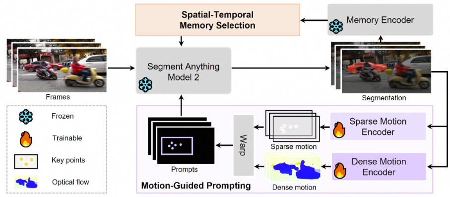
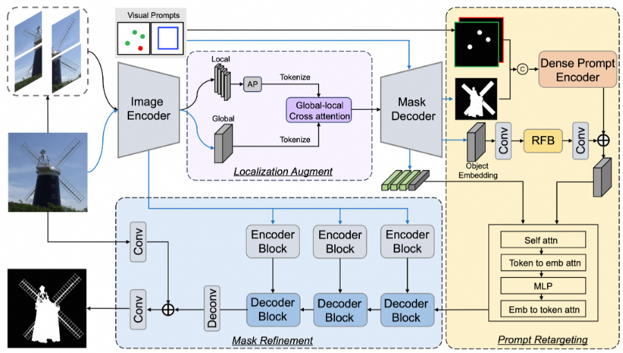
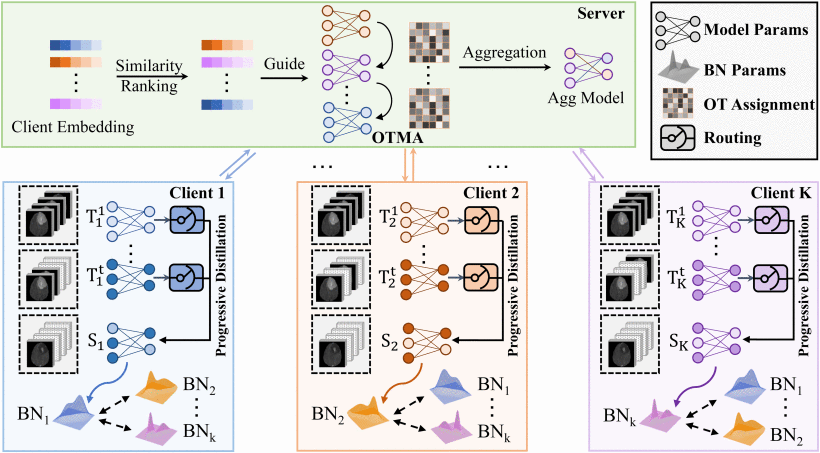
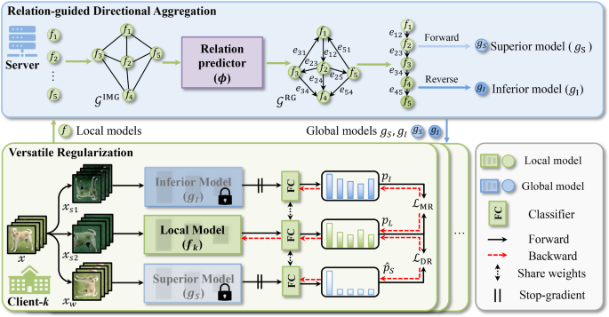
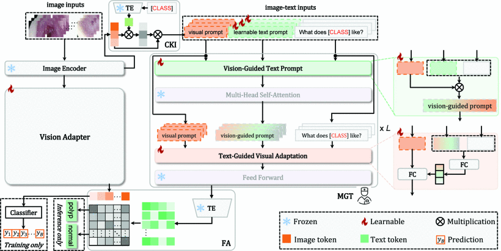

Qiu-Shi YANG 杨秋实
Department of Electrical Engineering, |
|
About Me
I am a research scientist with Tongyi Lab, Alibaba Group. I obtained my Ph.D degree from the City University of Hong Kong in 2024, advisor by Prof. Yixuan YUAN. I spent wonderful vacations as an intern at Alibaba DAMO, Meituan, Westlake University, and Horizon Robotics. Before that, I received B.Eng from Northeastern University in 2019.
Research Highlights
I am broadly interested in building powerful, efficient and robust intelligent systems that are capable of perception, reasoning, generation, and interaction with the real world.
My current research highlights the following perspectives:
Welcome all research collaboration, please don't hesitate to drop me emails if interested. Also feel free to discuss any interesting topics or questions related to AI techniques/engineering, starup, products and investment!
[02/2025] Our paper FedBM has been accepted by MedIA 2025.
Preprint:
MoSAM: Motion-Guided Segment Anything Model with Spatial-Temporal Memory Selection
Towards Fine-grained Interactive Segmentation in Images and Videos
Journal:
Progressive Distillation With Optimal Transport for Federated Incomplete Multi-Modal Learning of Brain Tumor Segmentation
Relation-Guided Versatile Regularization for Federated Semi-Supervised Learning
Hierarchical Bias Mitigation for Semi-Supervised Medical Image Classification
D2-Net: Dual Disentanglement Network for Brain Tumor Segmentation With Missing Modalities
Conference:
Enhancing Clinical Information for Zero-Shot Medical Diagnosis by Prompting Large Language Model
MRM: Masked Relation Modeling for Medical Image Pre-Training with Genetics
Semi-Supervised Medical Image Classification with Temporal Knowledge-Aware Regularization
Towards Robust Adaptive Object Detection under Noisy Annotations
Learning Dynamic Convolutions for Multi-modal 3D MRI Brain Tumor Segmentation
Detection of Rail Surface Defects Based on CNN Image Recognition and Classification
News
[01/2025] Our paper Polyp-Gen has been accepted by ICRA 2025.
[01/2025] Our paper Long-tailed Medical Diagnosis has been accepted by Computers in Biology and Medicine.
[01/2025] Invited to serve as an Area Chair of MICCAI 2025 in Daejeon, South Korea.
[01/2025] Our paper PLOT has been accepted by IEEE JBHI 2025.
[11/2024] Our paper FedRVR has been accepted by IJCV 2024.
[08/2024] Pass the Ph.D. Defense.
[08/2024] 2 papers BCE and FoF have been accepted by BIBM 2024.
[06/2024] 2 papers From Static to Dynamic Diagnostics and FedBM have been accepted by MICCAI 2024.
[07/2023] Our paper MRM has been accepted by ICCV 2023.
[07/2023] Join Alibaba, DAMO to start research internship.
[05/2023] Our paper MRC-VFC has been early accepted by MICCAI 2023.
[02/2023] Our paper HABIT has been accepted by IEEE TMI 2023.
[06/2022] Our paper TEAR has been accepted by MICCAI 2022.
[05/2022] Our paper D2Net has been accepted by IEEE TMI 2022.
[03/2022] Our paper NLTE has been accepted by CVPR 2022.
Selected Publications｜Full list

Qiushi Yang, Yuan Yao, Miaomiao Cui, Liefeng Bo.
arXiv preprint 2025
[arXiv] [Code] [Project]

Yuan Yao, Qiushi Yang, Miaomiao Cui, Liefeng Bo.
arXiv preprint 2025
[arXiv] [Code]

Qiushi Yang, Meilu Zhu, Peter Y. M. Woo, Leanne Lai-Hang Chan, Yixuan Yuan.
IEEE Journal of Biomedical and Health Informatics (IEEE JBHI), 2025. (CCF-C, Impact Factor: 7.7)
[Paper] [Code]

Qiushi Yang, Zhen Chen, Zhe Peng, Yixuan Yuan.
IEEE Journal of Biomedical and Health Informatics (IJCV), 2024. (CCF-A, Impact Factor: 14.5)
[Paper] [Code]

Qiushi Yang, Zhen Chen, Yixuan Yuan.
IEEE Transactions on Medical Imaging (IEEE TMI), 2023. (CCF-B, Impact Factor: 10.6)
[Paper] [Code]

Qiushi Yang, Xiaoqing Guo, Zhen Chen, Peter Y. M. Woo, Yixuan Yuan.
IEEE Transactions on Medical Imaging (IEEE TMI), 2022. (CCF-B, Impact Factor: 10.6)
[Paper] [Code]

Qiushi Yang, Meilu Zhu, Yixuan Yuan.
IEEE International Conference on Bioinformatics and Biomedicine (BIBM), 2024. (CCF-B)
[Paper] [Code]

Qiushi Yang, Wuyang Li, Baopu Li, Yixuan Yuan.
IEEE International Conference on Computer Vision (ICCV), 2023. (CCF-A)
[Paper] [Code]

Qiushi Yang, Xinyu Liu, Zhen Chen, Yixuan Yuan.
International Conference on Medical Image Computing and Computer Assisted Intervention (MICCAI), 2022. (CCF-B)
[Paper] [Code]

Xinyu Liu, Wuyang Li, Qiushi Yang, Baopu Li, Yixuan Yuan.
IEEE Conference on Computer Vision and Pattern Recognition (CVPR), 2022. (CCF-A)
[Paper] [Code]

Qiushi Yang, Yixuan Yuan.
International Conference on Medical Image Computing and Computer Assisted Intervention Brainlesion Workshop (MICCAI Workshop), 2020.
[Paper]

Lidan Shang, Qiushi Yang, Jianing Wang, Shubin Li, Weimin Lei.
IEEE International Conference on Advanced Communications Technology (ICACT), 2018 (Oral).
[Paper]
Work Experience
Co-Founder of the startup company
I am fortunate to work with other talent founder and co-founders to develop our product.
Research Intern
Advisor: Dr. Ke Yan and Prof. Le Lu
Research Intern
Advisor: Prof. Mingyu Fan
Research Assistant
Advisor: Prof. Stan Z. Li
Research Intern
Advisor: Mengjia Yan
Selected Awards
Outstanding Academic Performance Award of City University of Hong Kong, 2023
Northeastern University Outstanding Student Scholarship, 2016-2017
1st-Level Prize on National Mathematic Contest in Liaoning for Undergraduate Students, 2016
Teaching
EE3001: Foundations of Data Engineering, 2021, 2022 Fall, CityU.
EE5805: Java Network Programming, 2022, 2023 Summer, CityU.
EE3206: Java Programming and Applications, 2024 Spring, CityU.
Services
Conference Reviewer: CVPR'25,24,23,22, ICCV'25,23, ECCV'24,22, NeurIPS'25, MICCAI'25,24,23,22.
Journal Reviewer: TMI, TNNLS, TCSVT, Neural Networks